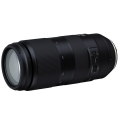

采用双MPU（微型处理器单元）高速控制系统，自动对焦速度、精度获得全面提升的同时，更是达到了4级光学防抖。镜筒结构中部分采用镁合金，实现1,115g同级别最轻机身重量。先进光学设计的基础上，加入腾龙独创具有出色防反射性能的eBAND超宽频谱多角度抗反射镀膜和3片LD低色散镜片，成为一款追求高画质、高性能的超远摄变焦镜头。
性价比高，体积小巧，携带方便！素质不错。
成像和对焦，都好于佳能大白一代，小巧好携带
塑料镜身，长焦段光圈略少，当然价格摆在这里